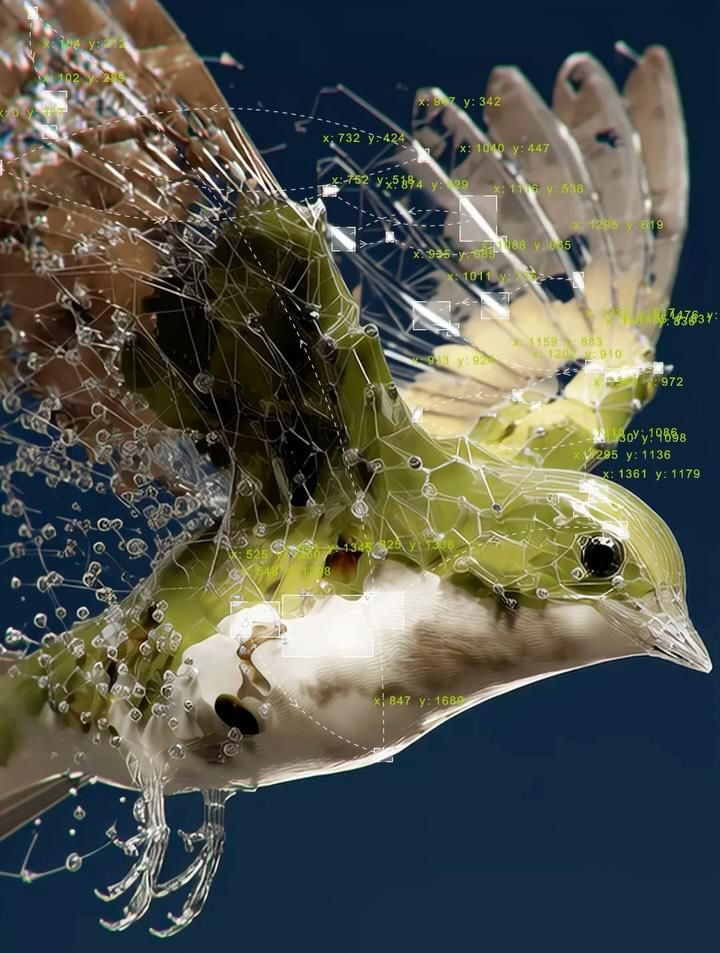

Talk to Jarvis & Grounded Vault RAG
Where would you like to start today? Solving wide-scale problems as an elite AI agent.
Capture notes, voice memos, web clips, and files instantly.
Click microphone to record a real-time voice memo. Audio will be transcribed via Whisper & auto-tagged.
Supports TXT, MD, PDF, JSON, CSV, JS, PY, PNG, JPG files. Text & OCR data will be indexed automatically.
Visual map of your saved ideas and their automatic connections. Click any node to explore.
Once a day, the system analyzes your past 7-day activity and surfaces 3–5 older notes that are semantically relevant to what you're working on right now—preventing saved notes from becoming a dumping ground.
Synthesized Q&A review cards with 3D flip animation, audio TTS readouts, and Spaced Repetition Leitner scoring.
💡 Click card or press Space to reveal answer
3D FLIP ↻Autonomous on-device AI working agents that continuously process, summarize, quiz, connect, and resurface your personal knowledge base.
Executive Key Takeaways & Action Items Distiller. Automatically converts long notes into executive digests.
Active Recall Quiz Generator. Synthesizes interactive Q&A cards from saved notes to test retention.
Entity Relationship & Discrepancy Mapper. Discovers hidden bi-directional concept links across notes.
Memory Discovery Engine. Surfaces forgotten notes matching your current task context and query history.
Telemetry & Matrix Auditor. Measures sparse vector matrix density, query latency, and memory footprint.
Run voice transcription (whisper.cpp) and embeddings 100% locally. Audio and raw notes never leave your device.
Read out RAG AI answers automatically when synthesized.
Export all notes, tags, entities, and RAG session history to a JSON file or import a previous backup.
By default, Second Brain uses its built-in local vector RAG engine. You can optionally supply your Gemini or OpenAI API key below for cloud generation.
Autonomous on-device AI working agents that continuously process, summarize, quiz, connect, and resurface your personal knowledge base.
Executive Key Takeaways & Action Items Distiller. Automatically converts long notes into executive digests.
Active Recall Quiz Generator. Synthesizes interactive Q&A cards from saved notes to test retention.
Entity Relationship & Discrepancy Mapper. Discovers hidden bi-directional concept links across notes.
Memory Discovery Engine. Surfaces forgotten notes matching your current task context and query history.
Telemetry & Matrix Auditor. Measures sparse vector matrix density, query latency, and memory footprint.
Select your preferred luxury theme aesthetic and dynamic canvas backdrop palette.
Run voice transcription (whisper.cpp) and embeddings 100% locally. Audio and raw notes never leave your device.
Read out RAG AI answers automatically when synthesized.
Export all notes, tags, entities, and RAG session history to a JSON file or import a previous backup.
By default, Second Brain uses its built-in local vector RAG engine. You can optionally supply your Gemini or OpenAI API key below for cloud generation.
Second Brain AI operates 100% on-device. Your personal notes, voice transcripts, OCR files, and vector embeddings are processed entirely inside your browser's local memory space using IndexedDB. No raw data, notes, or telemetry are ever sent to remote server LLMs.
Track high-level learning targets, link research notes, and generate AI milestone roadmaps.
Manage your multi-turn research threads